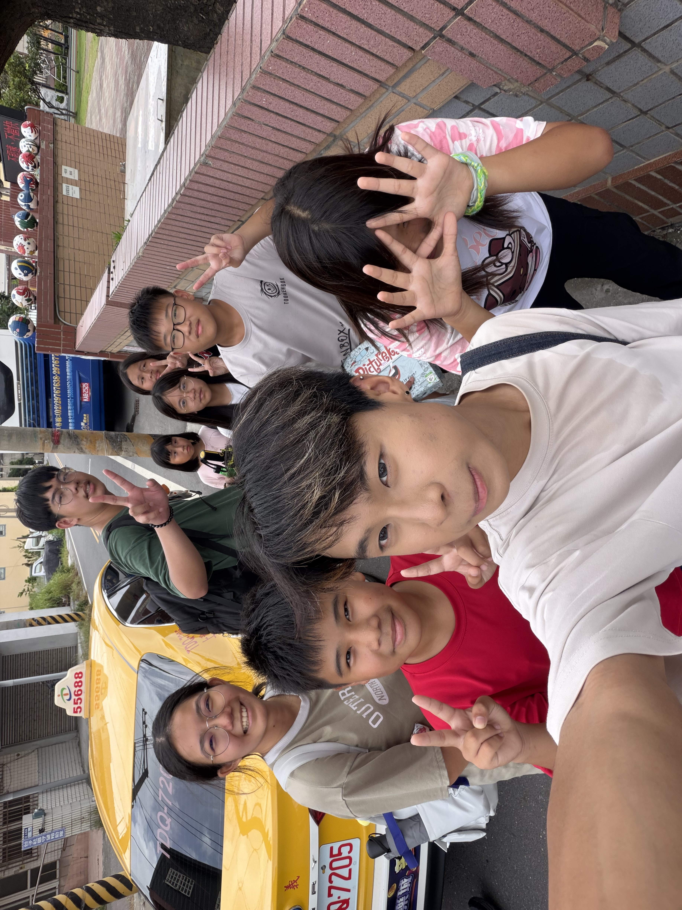

那些我所在意的課業與社團

大學除了學業相干的必修學分以外，社團也是我大學生活中不可缺少的要素。
- 慈幼社：擔任562/563營隊幹部 - 活動長，負責活動執行與發號施令。
- 雀兒輕音社：參與每學期的公演，預備演出上台呈現與分享。
在社團與課業中，要如何取得平衡？
- 利用白天零碎空堂：
事情不一定要一個很長的時段才可以進行，利用碎片的時間也可以完成課內作業或是社團的職務。 - 學會安排優先次序：
刻意把時間專門留給課業以及社團，保留完整的時間來專注處理，而且不隨意調動當下所要處理的內容。 - 依照實際情況彈性調整：
考前就多花時間在唸書，社團的事情就可以暫緩。
我的115-1課表
以下是我這學期的上課課表，可以看到課程的分布與時段：
| 節次 | 一 | 二 | 三 | 四 | 五 |
|---|---|---|---|---|---|
| 1 | 資料結構 | ||||
| 2 | 資料結構 | 物件導向程式設計 | |||
| 3 | 課程設計與教學 | 班週會及導師時間 | 電路學(一) | 人際關係 | 物件導向程式設計 |
| 4 | |||||
| N | |||||
| 5 | 全球及永續議題英文(一) | 電子學(一) | 電子學實習(一) | 計算機組織 | |
| 6 | |||||
| 7 | 電路學(一) | 網頁程式設計 | |||
| 8 | 網頁程式設計 | 電子學(一) | |||
| 9 | 計算機組織 | ||||